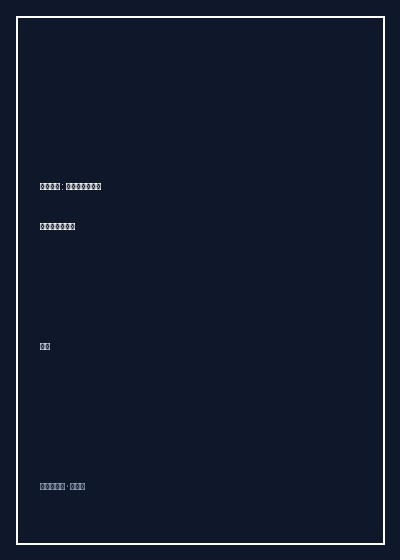

《小镇喧嚣》

总体观点
《小镇喧嚣》是中国基层政治研究的一座不可逾越的田野丰碑。吴毅教授深入中部某省‘黄湖镇’，以近距离、显微镜式的超长白描镜头，追踪记录了乡镇书记、镇长、七所八站干部、村支书与各色村民在整整一年间的真实权力交锋与利益博弈。它彻底撕掉了传统理论对乡村政治‘田园牧歌’或‘纯粹官民对立’的简单化浪漫面具，血淋淋展示了后税费时代中国基层政权在现代化压力下的复杂生态。
乡镇政权是中国国家机器在基层的‘悬浮与挤压中枢’。上面千条线，下面一根针。乡镇党委政府既要面对上级县委县政府层层加码、不容辩驳的招商引资、计划生育、拆迁修路等刚性指标考核（‘逼进度、要结果’）；又要面对取消农业税后基层财政枯竭、负债累累的窘境；更要面对市场经济洗礼后权利意识苏醒、深谙国家政策法规与上访博弈之道的精明农民。基层干部不得不终日处于‘救火队长’般的神经高度紧绷状态。
中国基层社会的政治智慧本质上是一套在正规制度与乡土人情夹缝中求生存的‘迎风博弈与模糊政治艺术’。在面对修路征地、企业拆迁、宗族械斗、老上访户缠访等尖锐危机时，严格的法律条文往往在复杂的宗族关系、历史纠纷与人情面子面前失效。基层官员必须精通‘摆平即是水平、搞定就是稳定’的乡土权谋，运用软磨硬泡、以拖待变、人情关系网连环攻心、私下变通补偿等非正式治理技术维系着基层的动态脆弱平衡。
核心观点
-
1. ‘迎风奔跑’的乡镇招商引资困境
为了完成县里下达的数千万元硬性招商引资任务，黄湖镇党委政府全体干部被分派了招商指标。面对沿海飞来的精明私营老板，镇领导不仅要低三下四陪酒伺候、出资代垫征地前期款，甚至为了留住企业不得不甘愿咽下老板开出的苛刻免税甚至污染豁免条件。
全景还原某纺织印染厂进驻黄湖镇的全过程：镇干部连续数周熬夜陪客考察，好不容易签下意向书，却因为村民堵路抗议污水排入鱼塘而险些流产，书记镇长在企业与村民两头受气焦头烂额。 -
2. 征地拆迁中的钉子户与‘软硬兼施’博弈
国家级高速公路与省道拓宽工程穿过黄湖镇，各村征地拆迁成为一场刺刀见红的攻坚战。村民们精细盘算每一棵果树、每一间猪圈的补偿款，更有宗族强势户漫天要价当‘钉子户’；镇干部既不敢动用警力强拆引发群体事件，又面临工期死线，只能动用‘连坐亲情攻心战’。
为了攻下一个死硬不搬迁的老党员家，镇党委书记将该户在县城当公务员的侄子与在镇中心小学当教师的女儿强行抽调‘停职做思想工作’，利用家族伦理亲情倒逼当事人最终含泪签字腾房。 -
3. 后税费时代的‘掏空财政与跑部钱进’
取消农业税彻底切断了乡镇向农民合法征收‘三提五统’的造血管道，乡镇财政瞬间陷入‘吃财政转移支付饭’的困境，黄湖镇背负数千万元历史普九债务。为了给干部发工资和偿还利息，镇长最核心的工作就是常年跑县财政局、交通局、水利局‘争项目、套专项资金’。
生动描写镇长揣着烟酒礼品在县财政局走廊外苦苦守候副局长签批三万元办公经费拨款的卑微场景，揭示了后税费时代乡镇政权空壳化与对上绝对依附的制度困境。 -
4. 专业上访户与基层信访维稳拉锯战
信访维稳‘一票否决’制度让乡镇主官视上访者如虎狼。部分深谙体制软肋的精明村民成为‘常年专业上访户’，专挑全国两会、省市党代会等敏感节点买票进京，迫使乡镇政府派出数批干部专程进京高成本拦截、包吃包住包回程并私下给‘封口救济款’。
详细记录老上访户‘胡老汉’与镇维稳专班十几年如一日的斗智斗勇：胡老汉只要在火车站露面，镇干部就不得不全员出动掏腰包请吃牛肉面好言相劝，维稳成本演变为乡村社会荒诞的制度消耗黑洞。 -
5. 乡镇干部的群体画像：疲惫与现实主义
书中的乡镇干部绝非影视剧中脸谱化的贪官污吏或道德圣人，而是一群有血有肉、有老婆孩子、面临升迁天花板的普通体制人。他们在麻将桌上宣泄压力，在酒桌上拉拢感情，在面对农民时深通土话方言，在现实夹缝中展现出惊人的生存韧性与平民狡黠。
镇党政联席会议上的精彩对话白描：各班子成员表面争论修桥资金摊派，私下则暗暗盘算各自包村的政治风险防范，将中国传统熟人社会的生存理性展现得入木三分。
全书结构
-
引言 黄湖镇与它的喧嚣底色
交待田野调查地点中南部黄湖镇的地理风貌、行政沿革、人口宗族分布与田野研究方法，切入基层政权运作全景。
细致描摹黄湖镇主街道上摩托车轰鸣、农资店叫卖与镇政府破旧两层办公小楼的市井全貌，定格乡村社会的现实质感。 -
第一篇 发展之累：招商引资与修路征地的泥潭
记录黄湖镇全年在县域经济考核重压下推行招商引资、纺织厂落户、红枫大道拓宽修路征地中的激烈官民拉锯战。
真实还原一次为了抢抓晴好天气强行下达推土机进场施工命令的惊险夜晚，镇干部彻夜手挽手人墙阻挡情绪激动的护地村民。 -
第二篇 治理之困：计生突击与信访维稳风暴
深入后税费时代最头疼的两大‘一票否决’刚性任务，全景还原全镇干部下乡清查超生与轮番进京‘截访’的荒诞博弈。
描绘计生小分队半夜突击进村搜查超生逃匿妇女，与村民藏匿于地窖、全村狗叫连天的戏剧性猫鼠游戏田野实录。 -
第三篇 财政之窘：历史债务与项目争夺战
剖析黄湖镇数千万普九负债与农村合作医疗收缴中的艰难，展示镇领导如何通过跑部钱进、包装农业综合开发项目艰难维持运转。
解构一场为了向上级套取‘小流域治理专项资金’而精心编造虚假工程进度表、陪同省专家组喝酒吃饭的公关全过程。 -
第四篇 人情之网：村级换届选举与宗族势力交织
聚焦黄湖镇下辖重点村的村民委员会换届选举，记录宗族派系大姓在选票贿选、暗箱串联与村级权力再分配中的明争暗斗。
记录某大村两个同宗家族为了争夺村委会主任公章，在村部计票现场掀翻票箱、相互揪住衣领推搡扭打的真实乡村选举百态。 -
结语 喧嚣背后的中国基层政治密码
总结全书，从田野实录升华至政治学理论反思，探讨现代国家政权建设（State-Building）在中层末梢遭遇的体制困境与未来走向。
吴毅在暮色苍茫中告别黄湖镇，凝视着乡间公路上疾驰而过的运沙卡车，为这片喧嚣、粗粝却充满顽强生机的华夏大地留下深沉凝视。